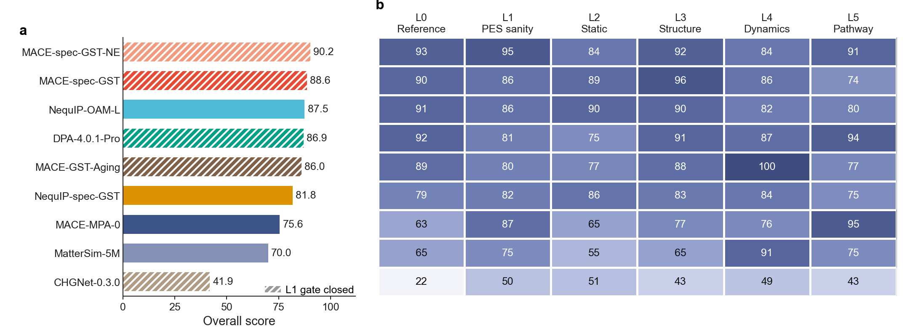
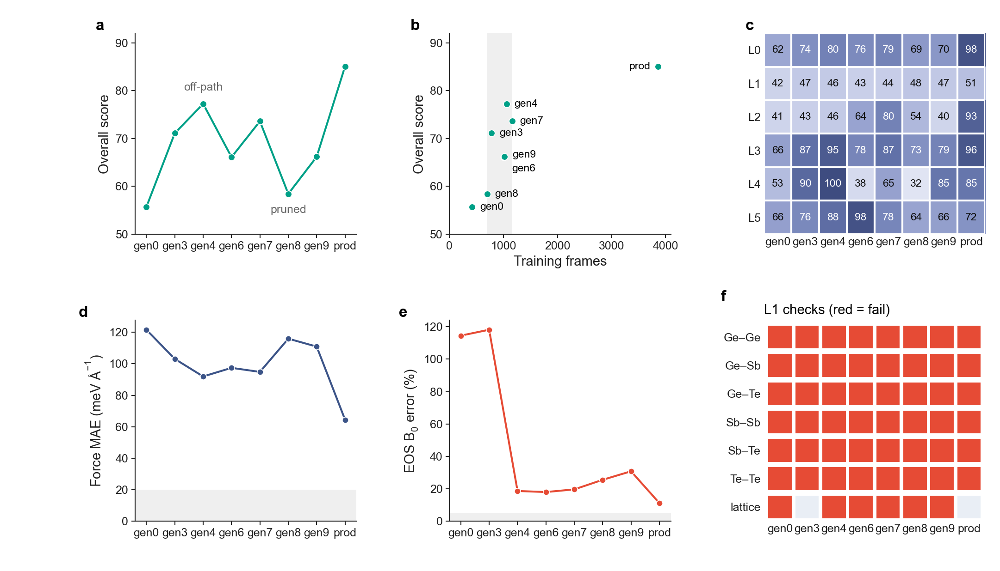

一套从数值一致性测到相变路径的势函数分级评估框架，加上一套不确定性驱动的主动学习脚本。评估告诉你势函数在哪一层物理性质上开始失效，主动学习据此去补数据。
mlipeval run · rank · card · candidates
alflow train · sample · label · collect · merge
5 个通用势，加上 4 个 GST 专用势。专用势与对应的通用势架构相同，只换了训练数据，所以 MACE-MPA-0 → MACE-spec-GST、NequIP-OAM-L → NequIP-spec-GST 这两对之间的差异只来自数据。

每张图的上排是物理曲线：参考数据加 4 个代表模型，虚线为通用势、实线为同架构的专用势。下排是 9 个模型的汇总，各面板共用同一条模型轴。图都由 docs/notebooks/fig*.ipynb 从结果文件直接生成，Nature 版式，183 mm 通栏。
一条已有的主动学习历史：gen0–gen9 是逐代扩充的数据集，prod_train 是最终部署版。每一代都用相同的 MACE 架构和超参单独训练一个模型，再完整跑一遍 L0–L5。
flowchart LR
A[初始数据集] --> B[alflow train]
B --> C[alflow sample]
C --> D[alflow label]
D --> E[alflow collect]
E --> F[alflow merge]
F --> B
F -. 里程碑 .-> G[mlipeval run / card]
G -- 失败构型 --> H[mlipeval candidates]
H --> D

总分从 gen0 的 55.7 升到 prod_train 的 85.1，但并不单调。1060 帧的 gen4 有 77.3 分，1161 帧的 gen7 只有 73.6 分，剪枝后的 gen8 跌到 58.4 分。
L3 改善最早，gen3 就到 87 分。L2 波动最大：gen0 和 gen3 的 B₀ 误差都超过 110%。L4 在 gen6、gen8 突然变差。只看力 MAE 的话，这些都看不到。
8 代全部卡在 L1 的二体 PEC 检查上，且不随数据增多而改善。评估把这类失败直接翻译成下一轮要算的结构：二体扫描、压缩胞、高温离群帧。
平台把本项目当作命令行工具调用，不需要 import 内部模块。重计算在 GPU 节点上执行；models、rank、card、candidates、leakage 是纯后处理，在登录节点上就能跑。
# 安装 git clone https://github.com/qundaoXu/mlip_auto_flow.git && cd mlip_auto_flow pip install -e . # mlipeval, alflow pip install -e ".[al]" # + mace-torch, scikit-learn, tqdm # 结果与参考数据不在仓库中：指向完整的 eval_framework 工作副本 export MLIPEVAL_HOME=/path/to/eval_framework
# 评估
mlipeval models
mlipeval run l0 --model nequip_oam_l --set audit
mlipeval run all --model mace_spec_gst
mlipeval submit --model mace_spec_gst --chain
mlipeval rank --models a,b,c --clean --markdown \
--out-stem my_set
mlipeval card --model al_prod --clean --json
mlipeval candidates --model al_prod --out next/
mlipeval leakage al-ladder# 主动学习：整个循环 alflow run --config examples/alflow.yaml # 或分阶段（每步输出一行 JSON） alflow train --train T --valid V --test S \ --foundation-model mace-mpa-0.model alflow sample --models committee/model*/*.model \ --init-conf init.xyz --temp 600 alflow label --frames comm_traj/uncertain_frames.xyz \ --template-dir dft_input --submit --wait alflow collect --root dft_cal alflow merge --base train.xyz \ --new dft_cal/dft_merged.extxyz --out next.xyz